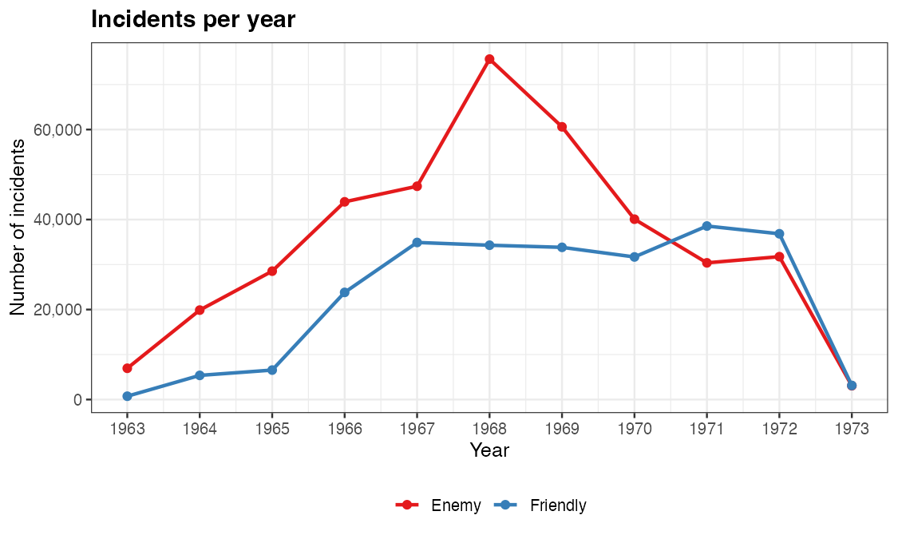
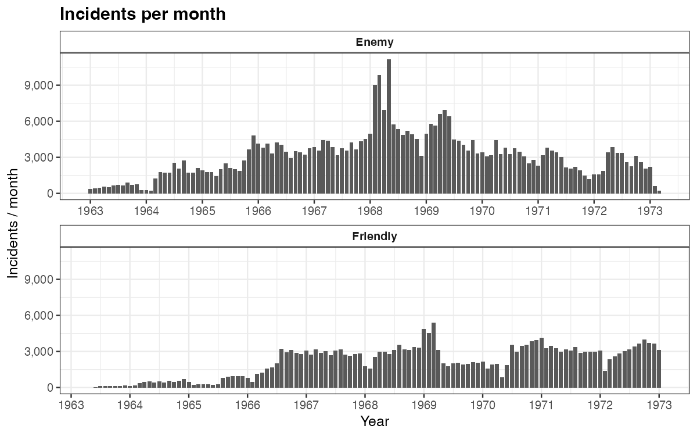
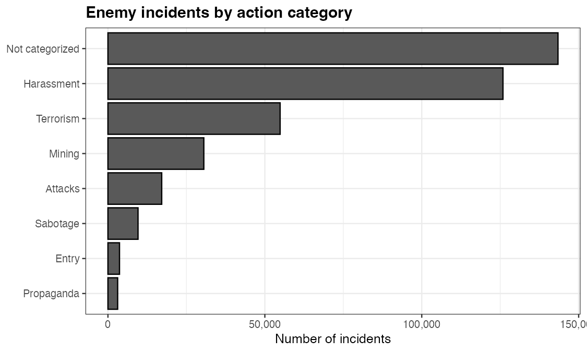

Counting Incidents: Time Series and Category Counts
Source:vignettes/incident-counts.Rmd
incident-counts.RmdThis article covers the other workhorse task with the combined data: counting incidents — over time (annual and monthly time series) and by category. As elsewhere, the code is shown but not executed at build time; the figures are pre-rendered.
Incidents per year
Count by initiation_date year and
aggressor_side. The 1968 Tet Offensive stands out as the
peak of enemy-initiated activity.
incidents |>
filter(!is.na(aggressor_side), between(year(initiation_date), 1963, 1973)) |>
mutate(year = year(initiation_date)) |>
count(year, aggressor_side) |>
ggplot(aes(year, n, color = aggressor_side)) +
geom_line(linewidth = 1) +
geom_point(size = 2) +
scale_x_continuous(breaks = 1963:1973) +
scale_y_continuous(labels = comma) +
scale_color_brewer(palette = "Set1") +
labs(x = "Year", y = "Number of incidents", color = NULL)
Incidents per month
lubridate::floor_date() collapses dates to the first of
each month for a finer time series, faceted by side.
incidents |>
filter(!is.na(aggressor_side), between(year(initiation_date), 1963, 1973)) |>
mutate(ym = floor_date(initiation_date, "month")) |>
count(ym, aggressor_side) |>
ggplot(aes(ym, n)) +
geom_col(fill = "grey35") +
facet_wrap(~ aggressor_side, ncol = 1, scales = "free_x") +
scale_x_date(date_breaks = "1 year", date_labels = "%Y") +
scale_y_continuous(labels = comma) +
labs(x = "Year", y = "Incidents / month")
Incident counts by category
A simple count() ranks enemy-initiated incidents by
enemy_action_category. reorder() sorts the
bars; coord_flip() makes the labels readable.
incidents |>
filter(aggressor_side == "Enemy", between(year(initiation_date), 1963, 1973)) |>
mutate(
enemy_action_category = coalesce(enemy_action_category, "Not categorized"),
# tidy up a spelling artifact carried over from the source file
enemy_action_category = recode(enemy_action_category, "Sabotoge" = "Sabotage")
) |>
count(enemy_action_category) |>
mutate(enemy_action_category = reorder(enemy_action_category, n)) |>
ggplot(aes(enemy_action_category, n)) +
geom_col(fill = "grey35", color = "black") +
coord_flip() +
scale_y_continuous(labels = comma) +
labs(x = NULL, y = "Number of incidents")
Where to go next
- Swap
aggressor_sidefordata_file_originto see how each source file contributes over time. - Count a different column (e.g.
general_action_category,prov_name) the same way. - Map these counts spatially with the province choropleth or satellite articles.